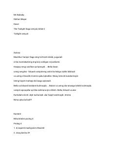

ZOBu kitob Stefani Meyerning mashhur 'Twilight' seriyasining to'rtinchi qismi bo'lib, o'zbek tiliga tarjima qilingan. Asarda Bella Swan vampir Edvard Kullen bilan turmush qurib, o'lmaslik yo'lini tanlashi va ularning farzand kutishi bilan bog'liq dramatik voqealar tasvirlanadi. Bella va Edvardning hayoti yangi xavf-xatarlar bilan to'lib, ular sevgi va omon qolish uchun kurashishga majbur bo'ladi.